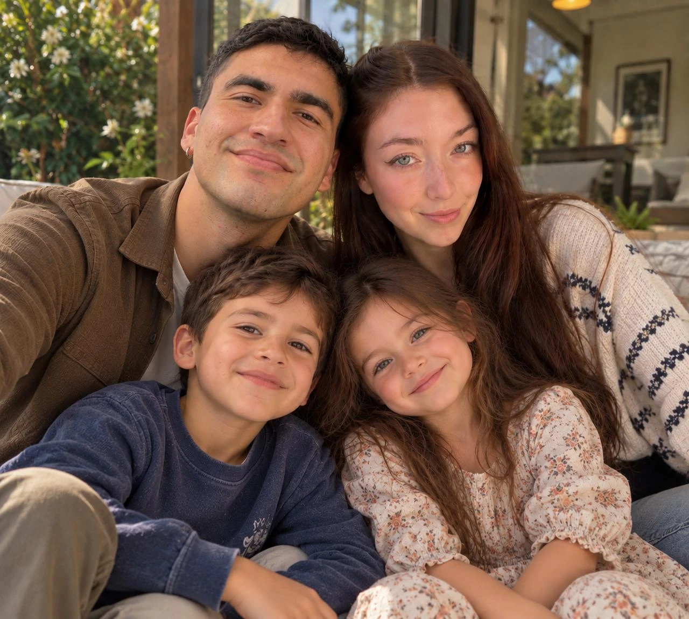

una carta para ti
Amor mío:
Últimamente te he regalado más cosas que se pueden tocar que cosas que se pueden sentir. Por eso esta vez quiero darte algo que para mí vale muchísimo más: mis palabras.
Te seré directo, nunca había sentido tanto en tan poco tiempo, lo cual siento no solo ha sido una elección, sino que también una respuesta natural a irte conociendo.
Si te dediqué la carta de Pierre a Marie Curie, fue porque yo también quiero hacerte esa promesa: que sigamos hipnotizados por nuestros sueños. El que soñamos como familia, el que soñamos espiritualmente y el que soñamos con nuestro trabajo.
Sueño con una familia contigo. Me encantaría pasar el resto de mi vida a tu lado, porque veo en ti no solo a una madre de amor inmenso, que cuidaría con el corazón a nuestros futuros niños, sino también a la esposa con quien quiero vivir cada hora del día: compartir un desayuno antes de que empiece la jornada, recorrer ciudades en ese auto que nunca imaginé tener, robarle al tiempo una siesta mientras los niños duermen y brindar con un vino cuando el día, por agitado que haya sido, por fin se calme.
Sueño también con crecer en la fe a tu lado. Tú me devolviste la mirada amable hacia la religión, esa que yo había dejado guardada hace años atrás, y me hiciste recordar que Dios ha estado presente en cada uno de nuestros pasos. No es casualidad que, en un mundo tan lleno de caos, los dos nos sintamos tan afortunados (y no solo de habernos conocido).
Y sueño con seguir desarrollando nuestra vocación, la que en tu caso admiro profundamente. Me conmueve cómo te entregas a tus pacientes más allá de lo que te piden: cómo celebras con ellos cuando terminan su proceso, cómo te sientas a armar un puzzle con ellos por más horas de las correspondientes, o cómo siempre los tratas por el solo hecho de querer verlos sonreír. Por mi lado, tu presencia en mi vida me hace ser un mejor ingeniero, uno más ingenioso, más creativo y también más crítico en querer ser mi mejor versión.
No puedo dejar de notar que te reflejas en mi corazón. Cuando te miro es como mirarme en un espejo: me reconozco en ti cuando veo tu pupila en los momentos que más nos decimos amarnos, y me gusta la versión de mí que aparece ahí. Sé que aún nos queda mucho por conocer, por aprender y por mejorar, pero quiero que todo ese camino sea con tu mano en la mía. Porque lo que siento por ti es puro, intenso y honesto.
Eres todo lo que quiero, hoy y siempre.
Y cada vez que busque mi reflejo, espero encontrarte a ti.
Felices dos meses.
Te amo.
